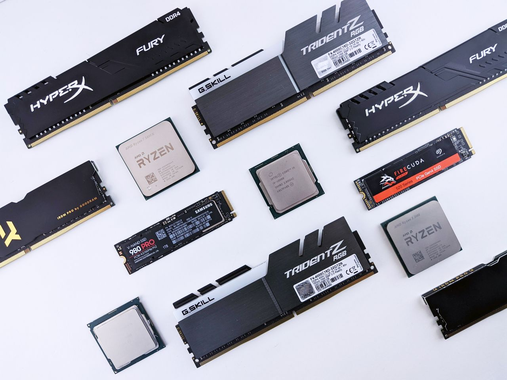
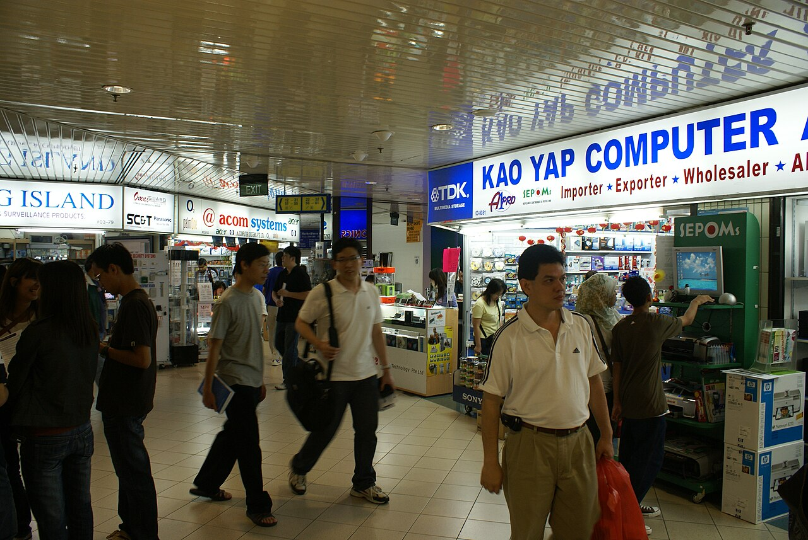

If you have been quoted everything from S$600 to S$3,500 for a gaming PC in Singapore, you are not imagining the gap. "Gaming PC" covers an enormous range of machines. The useful question is what that price buys at the resolution you actually play at.

How a gaming PC comes together in Singapore
There are three common routes: buy a branded pre-built, buy the parts and build it yourself, or have a workshop build it for you. The finished machines can look similar, but the work and responsibility behind them are very different.
Pre-builts can cost less upfront because manufacturers buy in bulk and use OEM parts made to a fixed target. The motherboard, power supply, cooler and case are chosen for that model and price point. That keeps the cost down, though upgrade and replacement options can be narrower than the headline specification suggests.
DIY gives you the most control. In Singapore, many people price parts at Sim Lim Square or online and assemble the machine themselves. The saving is real, and so is the work: matching the board and CPU, checking case clearance and power, updating firmware, installing Windows, and tracing a fault when something does not boot. For an experienced builder that is part of the hobby. For a first-timer, one bad part can mean several trips back to the counter.

Prices move too. GPU and memory supply, new launches, exchange rates and freight costs can change local listings within weeks. A parts list built from today's online prices is not always the price you pay next month.
Whichever route you choose, the steps are the same: pick parts that fit, assemble and cable them, set up Windows and drivers, then test under sustained load. A gaming PC is only finished when temperatures, frame rates and stability have been checked in a real game.
What a fully new gaming PC costs
For context, here are rough Singapore price points for a gaming PC built entirely from new parts. Treat them as broad guides rather than fixed quotes: the exact total moves with the parts you choose and the market at the time.
| All-new tier | Rough price | Typical target |
|---|---|---|
| Entry level | S$1,500 | 1080p high refresh and lighter 1440p play |
| Medium | S$2,500 | 1440p at high refresh |
| Medium high end | S$3,500 | High-refresh 1440p, streaming and heavier games |
These figures set the scene. They also explain why repurposing two parts makes a larger difference than trimming the small components.
How we build them
We take the middle route. We repurpose the CPU and GPU, where the price gap is largest and performance still holds, and buy the board, memory, storage, power supply, cooler and case new. Every part is checked before assembly, and the finished machine is burned in and run in a real game before handover. You get one fixed quote and a machine tested as a whole.

The three price points we build at
Our line-up is deliberately small. Three starting points keep the pricing clear and the testing repeatable, and every one can still be changed part by part.
| Tier | Price | Graphics | Processor | Best for |
|---|---|---|---|---|
| Tier 1 · Everyday | S$900 | RTX 3060 12GB | Ryzen 5 3600 | 1080p high refresh, 1440p at 60fps |
| Tier 2 · Performance | S$1,050 | RTX 3070 8GB | Ryzen 5 5600 | 1440p high refresh |
| Tier 3 · Enthusiast | S$1,300 | RTX 3080 10GB | Ryzen 5 5600X | 1440p 240Hz, streaming |
See the full price list for RAM, storage, power supply and case details on each tier.
What is actually included in that price
A common surprise: the machine is not a bundle of parts you assemble yourself. The S$900, S$1,050 and S$1,300 prices cover a machine that has been built, cable-managed, burned in and tested before handover. Every tier ships with 16GB of DDR4, a 1TB NVMe SSD and a new motherboard. Storage is included.
The case is new too. A new case matters more than people expect: fans, bearings and thermal paste are the parts that age badly, and a scratched case undoes the impression the rest of the machine makes. Only the CPU and GPU are repurposed, because those are the parts where the saving is real and the performance still holds up.
Where the money goes
The graphics card is the largest single line in any gaming build, which is why the tier price moves most when the GPU changes. The processor is second. Everything after that — board, memory, storage, PSU, cooler, case — is comparatively cheap and a false economy to skimp on. A failing power supply can take the whole machine with it; a slow drive makes a fast PC feel slow.
What we do not build into the price is a retail box, a shop floor and a sales commission. We repurpose the two expensive parts, test them one at a time, and pass the difference on. That is the entire reason a new-feeling machine can sit under S$1,000 in Singapore.
Optional costs, shown up front
Extras are priced separately so the base tier stays comparable. Dropping to a 500GB drive takes S$40 off. RGB sync is S$30. Moving a Tier 1 build into the larger DS900M case is S$10, while Tiers 2 and 3 can drop to the Aqua Uno for S$5 less. A 27-inch 1440p 180Hz monitor is S$165. Windows 11 activation is S$155 free during our Holiday Sale. Whole-computer warranty costs S$80 for six months or S$150 for a year on every tier.
You will see all of these in the budget gaming PC configurator before you commit. The quote is then fixed for the exact parts listed — if something becomes unavailable or costs more, we come back to you before spending anything.
How to decide which price is right for you
Start with your monitor, not your budget. A 1080p 144Hz screen is very well served by Tier 1, and paying more for the GPU mostly goes unused. On a 1440p 144Hz or 180Hz screen, Tier 2 is where the extra money turns into frames you can see. Tier 3 makes sense if you stream, edit, or want headroom for a future monitor upgrade.
If you are still unsure, tell us the games and the screen and we will tell you which tier is enough — including when the answer is "spend less". That conversation is free, and it is usually faster than comparing spec sheets online.
Common questions
How much does a gaming PC cost in Singapore?
At our workshop, a completed and tested gaming PC costs S$900, S$1,050 or S$1,300 depending on the tier. That price includes delivery, setup, a 1TB NVMe drive and a tested build — not just the parts in a box.
What is included in the S$900 build?
The S$900 build has an RTX 3060 12GB, a Ryzen 5 3600, 16GB of DDR4, a 1TB NVMe SSD, a 650W power supply and an Aqua Uno case. The motherboard, RAM, storage, PSU, cooler and case are new; only the CPU and GPU are repurposed.
Why are the CPU and GPU repurposed?
Because those two parts hold their performance but lose the most resale value. Spending the saving on a new board, new storage and a new case gives you a machine that looks and behaves like new.
Are there extra costs after the quoted price?
No. The quote is a fixed price for the exact parts listed. Optional extras such as a 1440p monitor, RGB sync, Windows activation or a warranty are shown separately before you approve anything, and nothing is ordered until you say yes.
Is a gaming PC under S$1,000 worth it?
Yes, if your target is 1080p high refresh or 1440p at 60fps. An RTX 3060-class machine handles Valorant, CS2, Dota 2, Apex and GTA V comfortably. If you want 1440p at high refresh or streaming, the S$1,050 tier is the more honest choice.